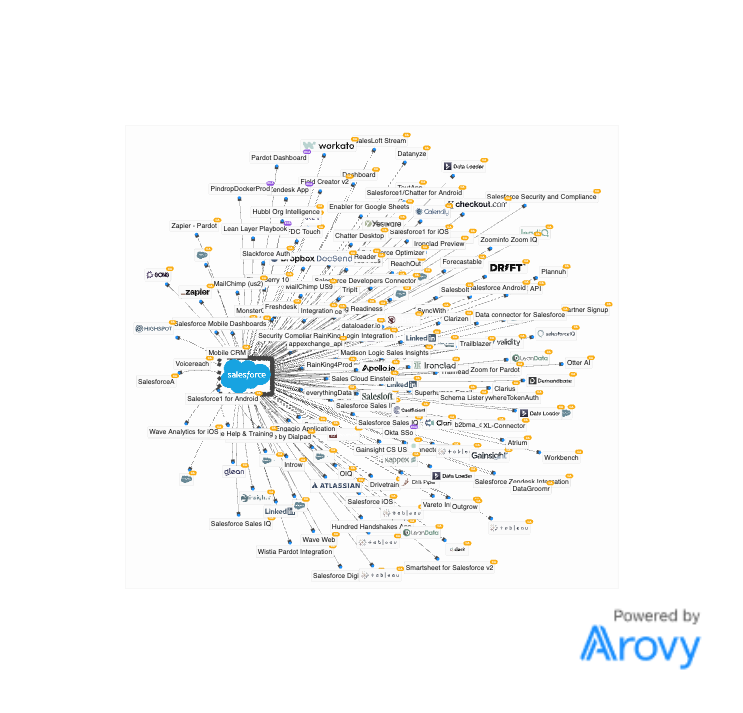

The CRO can’t trust the forecast. The CMO can’t see the funnel by product, channel or source. The CCO can’t see who’s at risk or ready to expand. Finance can’t see real-time usage. Same root cause: data stitched by hand across ~48 tools with no system of record — no one can even see which products a customer owns, what they’re worth, or where the upsell is.
First the why: this is what consolidating onto fewer, connected systems delivers for every leader.
$1.38M / yr across ~48 tools — and no system of record. Below is Pindrop’s live Salesforce ecosystem — every node is a tool or integration hanging off the CRM. You don’t need to read it; that’s the point. This is the spaghetti behind every leader’s “no visibility, no alignment, no source of truth.”

The one decision holding up marketing value. Pindrop wants off Pardot. Four credible paths — judged on what matters here: how fast marketing reaches value (lead scoring, attribution, ABM), what it takes to run, and how much optionality it preserves. This isn’t a cost exercise — it’s alignment, visibility and speed.
From the 6/4 discovery, Adri asked for a neutral evaluation against the criteria she named. Scored on her rubric (not our preference), HubSpot wins on the dimensions she flagged as revenue-critical this year.
| Adri’s criterion / pain | Marketo | HubSpot | Edge |
|---|---|---|---|
| Time-to-market | Months; her last rebuild ~8 | Live in weeks | HubSpot |
| Funnel visibility — volume / value / velocity | Weak native; leans on BI | Native dashboards by source/channel/stage | HubSpot |
| Multi-touch attribution across all sources | Separate paid product (Bizible) | Native multi-touch | HubSpot |
| ABM / target accounts (“can’t even align a list”) | Build it yourself | Native target-account views OOB | HubSpot |
| Ease of use / admin burden (team stretched) | Specialist + ~FT technical admin | Self-serve; cheaper to staff | HubSpot |
| Cost / TCO | High license + Adobe pull + admin | Lower all-in | HubSpot |
| Optionality / future consolidation | Pigeonholes into Adobe | Keeps the path open | HubSpot |
| True multichannel — email, ads, SMS, in-app | Email-centric; channels via add-ons | Has all of it — built for B2B, not B2C | HubSpot |
| Deep, flexible nurture for complex programs | Genuinely deeper & more flexible | Can hit ceilings on very complex flows | Marketo |
Marketo is the better tool for a problem Pindrop doesn’t have yet and can’t resource (deep nurture, dedicated ops engineering). HubSpot is the better tool for the problems Adri named as revenue-critical this year — speed, funnel visibility, attribution, ABM — and it keeps the consolidation door open. The honest blocker is change management.
The same picture, three ways: where you are today, the near-term move, and the consolidated ideal on HubSpot. Toggle to see what changes. (A fourth path — a data lake/warehouse as the source of truth — is in the Data Layer & the CTO tab.)
Optionality is the goal. Four strategic paths, compared on pros/cons, rough cost, effort and timeline — so leadership can decide deliberately. The headline: the HubSpot path isn’t one move, it’s a continuum with many variations within it — you go as far as each step earns, on your cadence.
| Annual · investment & impact | Today | Near-term (Option 1) HubSpot MAP + sales engagement · keep SFDC + Gainsight | Consolidated (Option 2) Full consolidation onto HubSpot |
|---|---|---|---|
| Current GTM spend | $1,379,794 | $1,379,794 | $1,379,794 |
| Tools consolidated | — | 10 | ~24 |
| Spend consolidated | — | $328,895 | $879,959 |
| + Platform investment (HubSpot) | — | +$54,000 | +$200,000 |
| + Clay (intent layer) | — | +$30,000 | +$30,000 |
| + 3rd-party CPQ (Salesforce retained) | — | +$60,000 | native ($0) |
| New annual run-rate | $1,379,794 | $1,194,899 | $729,835 |
| Net annual impact (freed budget) | — | +$184,895 | +$649,959 |
| Path to a data layer | — | Heavier · sooner (3 systems) | Lighter · later (product data) |
Sequenced, not big-bang. Each phase banks value and lets teams live in the platform before the next commitment — and a data layer comes after consolidation (Tab 03), when it’s lighter and cheaper.
Strip away the tooling noise. At steady state, your three core systems and your product data flow into one governed data lake + warehouse — the single source of truth — which powers BI for every team. GTM data and product data, finally in one place.
The warehouse has to reconcile all ~48 sources + 3 systems from day one — the heaviest build, ~2 FTE to run, needed sooner, and the most expensive. You pay to centralize data around the fragmentation instead of removing it.
Heaviest · ~2 FTE · soonerEach consolidation step removes sources the warehouse would otherwise reconcile. By the time you build it, the layer is mostly product/call telemetry joining a clean GTM record — lighter, later, cheaper.
Lighter · later · cheaperIt becomes a CTO conversation — not a RevOps one — at these trigger points. Any one of them is the signal to pull the CTO in.
A unified data / context layer — sized to scale:
Snowflake / BigQuery for structured GTM + finance data and modeled reporting.
For raw / unstructured product & call telemetry and AI use cases (schema-on-read). Together with the warehouse = a lakehouse at true scale.
ETL / reverse-ETL, a semantic layer, and a catalog + ownership so every team trusts the same numbers.